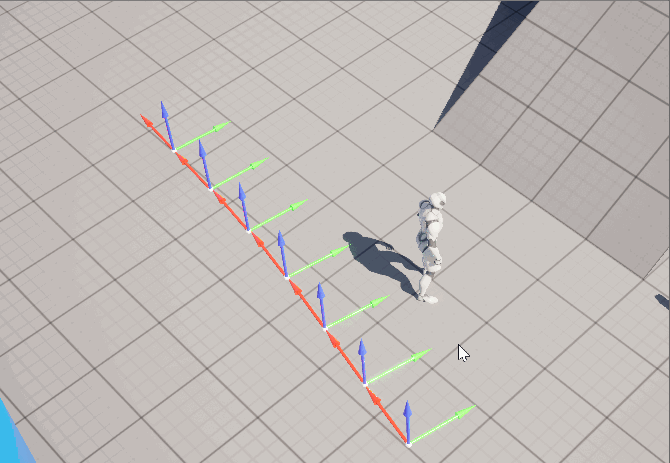

First attempt: PCG Graph in Unreal 5.6
As PCG Graph has already laid out the system, plus the better visual aesthetics in Unreal, it's a no-brainer to first try this idea in Unreal.
The working prototype was quickly developed, however, everything works fine, except for the packaged built...
After a deep digging in the engine's source code, I found out that some features supporting "Generate On Demand" is only available in the Editor.
I tried bypassing the editor check, but this feature required more than a boolean, but some other features only existing in the Editor instance.
Relunctantly, I had to give up this route.

^ Looks good in the editor, but "Generate On Demand" becomes unavailable in packaged build.
^ Debugging the feature in the packaged build, even with some tweaks, the runtime PCG doesn't produces smooth transition